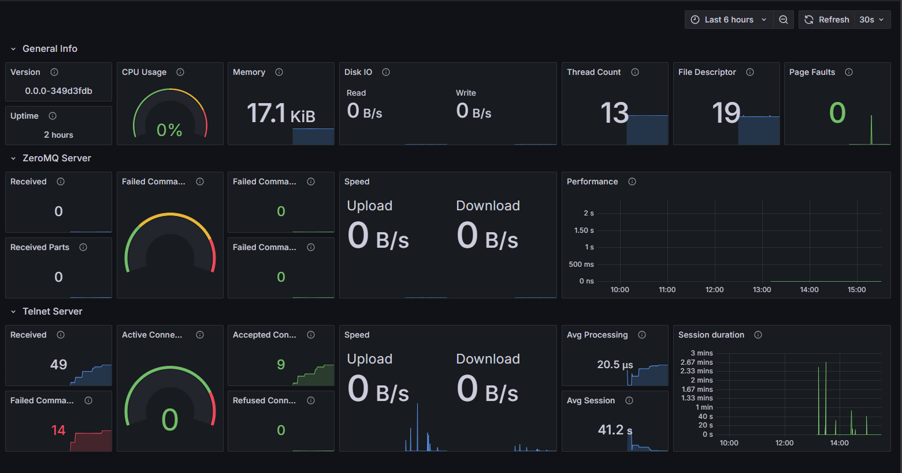

Project
CMake template to create new C++ applications with basic codes/interfaces are already defined. Requires a C++17 supported compiler.
It provides the following features
- Tracing
- Generates automatically minidump files using Crashpad for error signals.
- Logging
- Spdlog with rotating file, syslog and coloured stdout outputs
- Sentry and Grafana Loki integration for automatic forwarding of logs to an external HTTP server
- Prometheus client for track internal metrics like error counts, performance of functions including
- Incremental counters to track success/fail rates and active processes,
- Minimum and maximum timings,
- Quantile based performance metrics to determine bottlenecks
- User interactivity
- Embedded Telnet Server
- ZeroMQ socket
Feel free to ask, use and report any bugs you encountered!
Contents
- Project
- Contents
- CMake
- Scripts
- Dependencies
- Targets
- Grafana
CMake
- CodeCoverage : Detects and enables gcovr
- CompilerSecurityOption: Enables/Disables secure compiler flags
- Doxy : Find doxygen package and prepare doc environment
- GenerateSymbols : Adds a target for generation of symbol files for minidump
- GitVersion : Get SHA1 hash of current commit
- GraphViz : Find graphviz and dot executable to create dependency graph
Scripts
All scripts should be executed from top level directory
- firstName : Script to change placeholder name
- dump_syms : Dumps symbol files
Dependencies
Developing dependencies not required for runtime,
- breakpad (It is required for automatically dumping symbols)
- GoogleTest (For testing)
- MemPlumber (For testing)
- [ZLIB]() (It is required by breakpad)
These runtime dependencies should be installed to the system (for example via package managers like apt or dnf),
Full dependency graph can be seen here
Targets
- all : Prepares all targets
- coverage : Prepares coverage report
- docs : Prepares documentation
- dependency-graph : Prepares graphviz visualization of dependencies
- package : Prepares default packages which includes deb/rpm package and symbols with a systemd service. You should specify the desired package type with -DCPACK_GENERATOR="DEB" (or "RPM")
- test : Prepares gtest target
Grafana
Since there is a Prometheus server integration, also there is a Grafana integration. You can find an example for dashboard here. Also you can see screenshot of the dashboard below.



{kind=link}